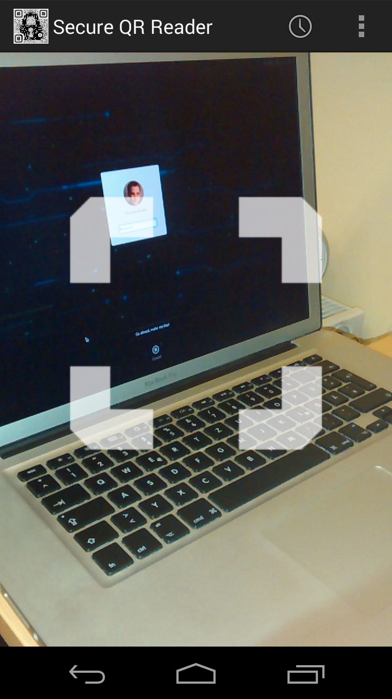
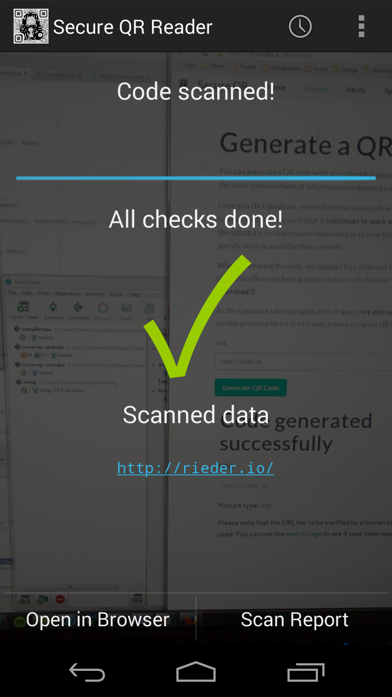
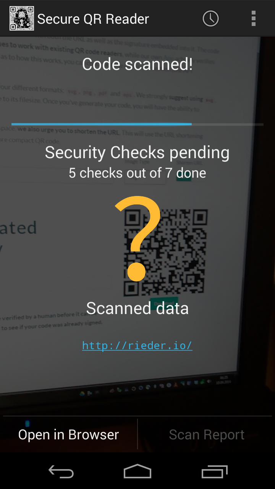

<!DOCTYPE html>
<html lang="en">
<head>
    <meta charset="utf-8">
    <meta http-equiv="X-UA-Compatible" content="IE=edge,chrome=1">
    <meta name="viewport" content="width=device-width, initial-scale=1">
    <meta name="description" content="Generate Secure QR codes and verify them with an Android App.">
    <meta http-equiv="content-type" content="text/html;charset=UTF-8">

    <link rel="author" href="https://plus.google.com/113087589757049332920"/>

    <!-- Latest compiled and minified CSS -->
    <link rel="stylesheet" href="//netdna.bootstrapcdn.com/bootstrap/3.1.1/css/bootstrap.min.css">

    <!-- Optional theme -->
    <link rel="stylesheet" href="stylesheets/flat-ui.css">

    <!-- our own stylesheet -->
    <link rel="stylesheet" href="stylesheets/style.css">

    <!-- bootstrap switch -->
    <link rel="stylesheet" href="stylesheets/bootstrap-switch.min.css">

    <script src="//code.jquery.com/jquery-1.11.0.min.js"></script>
    <script src="//code.jquery.com/jquery-migrate-1.2.1.min.js"></script>

    <!-- Latest compiled and minified JavaScript -->
    <script src="//netdna.bootstrapcdn.com/bootstrap/3.1.1/js/bootstrap.min.js"></script>

    <!-- moment.js - useful for date display -->
    <script src="//cdnjs.cloudflare.com/ajax/libs/moment.js/2.5.1/moment.min.js"></script>

    <!-- handlebars - needed for ember -->
    <script src="javascript/libs/handlebars-1.1.2.js"></script>

    <!-- bootstrap switch -->
    <script src="javascript/libs/bootstrap-switch.min.js"></script>

    <!-- ember.js -->
    <script src="javascript/libs/ember-1.5.0.js"></script>

    <!-- ember code -->
    <script src="javascript/app.js"></script>

    <title>Secure QR</title>
</head>

<body>

<script type="text/x-handlebars">
<nav class="navbar navbar-default" role="navigation">
    <div class="container-fluid">
        <!-- Brand and toggle get grouped for better mobile display -->
        <div class="navbar-header">
            <button type="button" class="navbar-toggle" data-toggle="collapse"
                    data-target="#bs-example-navbar-collapse-1">
                <span class="sr-only">Toggle navigation</span>
                <span class="icon-bar"></span>
                <span class="icon-bar"></span>
                <span class="icon-bar"></span>
            </button>
            <a href="admin"></a>
            {{#link-to 'home' class="navbar-brand" }}Secure QR{{/link-to}}
        </div>

        <!-- Collect the nav links, forms, and other content for toggling -->
        <div class="collapse navbar-collapse" id="bs-example-navbar-collapse-1">
            <ul class="nav navbar-nav">
                <li>{{#link-to 'home'}}Home{{/link-to}}</li>
                <li>{{#link-to 'encode'}}Encode{{/link-to}}</li>
                <li>{{#link-to 'verify'}}Verify{{/link-to}}</li>
                <li>{{#link-to 'app'}}App{{/link-to}}</li>
            </ul>
            <ul class="nav navbar-nav navbar-right">
                <li>{{#link-to 'list'}}History{{/link-to}}</li>
                <li>{{#link-to 'search'}}Search{{/link-to}}</li>
                <li>{{#link-to 'developer'}}Developer{{/link-to}}</li>
                <li>{{#link-to 'about'}}About{{/link-to}}</li>
            </ul>
        </div>
        <!-- /.navbar-collapse -->
    </div>
    <!-- /.container-fluid -->
</nav>

<div class="container">
    {{outlet}}
</div>
</script>


<script type="text/x-handlebars" id="home">
    <div class="jumbotron">
        <div class="row">
            <div class="col-md-4">
                
            </div>
            <div class="col-md-8">
            <h1>Secure QR</h1>
            <p>This service is an attempt to add some much needed security to QR Codes. There is an
           App which performs various security checks, as well as this website that allows you to
           embed a signature into a QR code.</p>
            {{#link-to 'encode' id="encodeButton" class="btn btn-lg btn-primary"}}Generate QR Code{{/link-to}}
            {{#link-to 'app' id="downloadButton" class="btn btn-lg btn-info"}}Download the App{{/link-to}}
            </div>
        </div>
    </div>
</script>

<script type="text/x-handlebars" id="encode">
        <h1>Generate a QR Code</h1>

        <p>
         You can generate a QR code with an embedded signature using this site. Currently <strong>only URLs</strong> are supported, as these are the most common form of information embedded into QR codes. We hope to add additional content types in the future.
        </p>
        <p>
         Once you click generate, you will receive your code with both the URL as well as the signature embedded into it. The code is generated in a way such that it <strong>continues to work with existing QR code readers</strong>, while our own {{#link-to 'app'}}App{{/link-to}} actually verifies the signature. In case you are interested as to how this works, you can check out the {{#link-to 'developer'}}developer{{/link-to}} section (the API specification is available there as well).
        </p>
        <p>
        When generating the code, we support four different formats: <code>svg</code>, <code>png</code>, <code>pdf</code> and <code>eps</code>. We strongly <strong>suggest using <code>svg</code></strong>, since this offers the best quality relative to its filesize. Once you've generate your code, you will have the ability to <strong>download it</strong>.
        </p>
        <p>
        As the signature takes up quite a bit of space, <strong>we also urge you to shorten the URL</strong>. This will use the URL shortening service provided by <a href="https://bitly.com/">bit.ly</a> to create a more compact QR code.
        </p>
        <form role="form" method="post" action="encode">
        <div class="row">
            <div class="form-group col-md-8">
                <label for="urlInput" class="control-label">URL</label>
                {{input type="url" class="form-control" placeholder="http://" valueBinding="model.urlInput"}}
            </div>
            <div>
                <div class="col-md-2 form-group">
                    <label for="type" class="control-label">Image Type</label>
                    {{view Ember.Select
                        class="form-control"
                        content=imageTypes
                        prompt="Please select a type"
                        selectionBinding="selectedType"}}
                </div>
            </div>
            <div>
                <div class="col-md-2 form-group">
                    <label class="control-label" for="shorten">
                        Shorten URL
                    </label>
                    {{input type="checkbox" name="shorten" checked=shorten data-toggle="switch"}}
                </div>
            </div>
        </div>
        <button {{action submitAction target="controller"}} class="btn btn-lg btn-primary">Generate QR Code</button>
        </form>

    {{#view App.PictureView}}
        {{#if successful}}
            <div class="col-md-8">
                <h2>Code generated successfully</h2>
              <p><strong>URL:</strong> <pre>{{printedUrl}}</pre></p>
              <p><strong>Picture type: </strong>{{type}}</p>
              <p><strong>Please note that the URL has to be verified by a human before it can be used. You can use the {{#link-to 'search'}}search page{{/link-to}} to see if your code was already signed.</strong></p>
            </div>
            <div class="col-md-4">
                <div class="span7 text-center">
                
                <a target="_blank" {{bind-attr href="downloadPath"}} class="btn btn-primary">Download</a>
                </div>
            </div>
        {{else}}
            {{#if imagePath}}
            <h2>Invalid URL</h2>
            <p>
             Please make sure that your URL contains a scheme name (like <code>http://</code> or <code>https://</code>)!
            </p>
            <p>
             If you still experience problems, you can <a href="https://twitter.com/thomasrieder">contact me on Twitter</a>.
            </p>
            {{/if}}
        {{/if}}
    {{/view}}

</script>

<script type="text/x-handlebars" id="verify">
        <h1>Verify URL</h1>

        <p>Using this site you can <strong>verify a signature by hand</strong>. Just enter the URL as well as the <a href="https://en.wikipedia.org/wiki/SHA-2">SHA-256</a> hash and you are good to go.</p>
        <p>
        If you just want to test the verification functionality, you can find some URLs on the {{#link-to 'list'}}history page{{/link-to}}. There is also quite a simple API available, in case you want to integrate this check into your own application. Details can be found {{#link-to 'developer'}}here{{/link-to}}.
        </p>
        <p>
        <strong>Please note that date displayed upon successful verification is actually the first time this URL was added.</strong> Thus, in case the same URL is encoded multiple times, only the first date will be shown.
        </p>
       <div class="sol-md-8">
           <form role="form" method="post" action="verify">
               <div class="form-group">
                   <label for="urlInput">URL</label>
                   {{input type="url" class="form-control" placeholder="http://" valueBinding="model.url"}}
                   <label for="hash">Hash</label>
                   {{input type="text" class="form-control" valueBinding="model.hash"}}
               </div>
               <button {{action verifyAction target="controller"}} class="btn btn-primary btn-lg">Check URL</button>
           </form>
       </div>

    {{#view App.VerifyView}}
        {{#if date}}
            <div class="col-md-8">
                <h2>QR verified</h2>
                <p><strong>Date added:</strong> {{format-date-pretty date}}</p>
                <p><strong>URL:</strong> <pre>{{curl}}</pre></p>
                <p><strong>Hash:</strong> <code>{{chash}}</code></p>
            </div>
            <div class="col-md-4">
                <div class="span7 text-center">
                
                <a target="_blank" {{bind-attr href="downloadPath"}} class="btn btn-primary">Download as SVG</a>
                </div>
            </div>
        {{else}}
            {{#if checked}}
                {{#unless date}}
                <h2>Verification failed</h2>
                <p>The signature server doesn't know of this URL/hash combination. You might want to check the {{#link-to 'list'}}history{{/link-to}}.</p>
                {{/unless}}
            {{/if}}
        {{/if}}
    {{/view}}

</script>

<script type="text/x-handlebars" id="app">
<h1>The Secure QR App</h1>
<p>
We have developed an Android app for the Secure QR project. This app includes multiple security checks to protect users against malicious QR codes. Without further ado, get the App here:
</p>
<p class="text-center">
    <a href="android/secureqr-latest.apk" class="btn btn-lg btn-primary">Download for Android</a>
    </br>
    <small><em>Requires Android 4.0 or higher</em></small>
</p>
<div class="row">
    <div class="col-md-4">
        
    </div>
    <div class="col-md-4">
        
    </div>
    <div class="col-md-4">
        
    </div>
</div>
<h5>Security Checks</h5>
<h6>Error Rate</h6>
<p>
The app checks for an abnormally high error rate in the QR code. A high error rate might indicate that the code has been tampered with.
</p>

<h6>Phishtank</h6>
<p>
URLs are verified against the <a href="https://www.phishtank.com/">Phishtank API</a> to detect malicious URLs.
</p>

<h6>Redirect Count</h6>
<p>
The app warns if a scanned QR code wants to redirect the user a large number of times, as this might indicate that the URL is trying to hide its "real" identity or create a redirection loop.
</p>

<h6>Google Safe Browsing</h6>
<p>
All URLs are checked against Google's <a href="https://developers.google.com/safe-browsing/">Safe Browsing lists</a> of known malicious URLs.
</p>

<h6>Dynamic DNS</h6>
<p>
The user is warned if an URL uses a hostname that is backed by a dynamic DNS service. This is due to the fact, that these hostnames have a very high abuse potential due to their volatility.
</p>

<h6>Robots.txt</h6>
<p>
The app checks whether the site may be indexed by search engines. If a QR code is scanned in public, and the site disallows all crawlers, this quite strange. If you put up a QR code in a public place, you <strong>want</strong> your website to be found.
</p>
<p>
<em>Note: this check is disabled by default due to a high possibility of false positives.</em>
</p>

<h6>Website Age</h6>
<p>
The <a href="https://archive.org/web/">Wayback Machine</a> is asked about when it has first seen the root page of the scanned website. Phishing sites are created and destroyed quite rapidly. This is why "young" websites, whose QR codes are found in public places, might be malicious.
</p>
<p>
<em>Note: this check is disabled by default due to a high possibility of false positives.</em>
</p>
<h5>Download Archive</h5>
<p>
In case you are interested in old versions of the app, you can find them <a href="android">here</a>.
</p>
</script>

<script type="text/x-handlebars" id="list">
<h1>Encoded URLs</h1>

<p>
<strong>Why is there even a history?</strong>
</p>
<p>
This site is meant to offer additional security to <strong>QR codes that are supposed to be scanned by the general public</strong>. Thus, it also allows you to actually see the data generated by other people. There is little sense in letting your QR code be signed by a public server and then not wanting people to see the URL. In case you want to <strong>host your own server</strong> (where you can disable the history), take a look at the {{#link-to 'developer'}}developer page{{/link-to}}. The symbol on the left indicates whether the QR code was already verified. The plus after the url whether it was shortened.
</p>
<p>
<strong>Please note that the history only contains the most recent 20 entries. You can also {{#link-to 'search'}}search for URLs{{/link-to}}.</strong>
</p>

<table class="table table-hover table-condensed table-responsive">
    <thead>
        <tr>
            <th><!-- verified sign --></th>
            <th>Date</th>
            <th><!-- shortened indicator --></th>
            <th>URL</th>
            <th>Hash</th>
        </tr>
    </thead>
    <tbody>
        {{#each model}}
            <tr>
            {{#if signature.verified}}
                <td><span style="color: #2ECC71" class="fui-check"></span></td>
            {{else}}
                <td><span style="color: #E74C3C" class="fui-cross"></span></td>
            {{/if}}
            <td>{{format-date signature.date}}</td>
            {{#if signature.shortened}}
                <td><span style="color: #000000" class="fui-plus" rel="tooltip" data-toggle="tooltip" title="This URL was shortened"></span></td>
            {{else}}
                <td></td>
            {{/if}}
            <td>{{signature.url}}</td>
            <td><code>{{signature.checksum}}</code></td>
            </tr>
        {{/each}}
    </tbody>
</table>
</script>

<script type="text/x-handlebars" id="about">
<h1>About Secure QR</h1>
<p>
My name is Thomas Rieder and I'm currently a computer science student and <a href="http://celix.at/">part-time software engineer</a>. Secure QR is my Bachelor's project at <a href="http://www.tuwien.ac.at/">Vienna University of Technology</a>. In case you want to know about more me or get in touch, <a href="http://rieder.io/">check out my website</a>.
</p>
<p>
I'm writing Bachelor's thesis at the <a href="http://www.sba-research.org/">SBA Research</a> center with my advisers being <a href="http://www.sba-research.org/team/researchers/katharina-krombholz/">Katharina Krombholz</a> and <a href="http://www.sba-research.org/team/management/edgar-weippl/">Edgar Weippl</a>.
</p>
<p>
More information about the project as well as any publications will be added here as soon as they are available.
</p>


</script>

<script type="text/x-handlebars" id="developer">
<h1>Developer Resources</h1>
<h2>The signature</h2>
<p>
The signature is a <a href="https://en.wikipedia.org/wiki/SHA-2">SHA-256</a> hash derived from the URL only. With <a href="http://nodejs.org/">nodejs</a> it can be generated like this:
<pre>
var crypto = require('crypto');
var shasum = crypto.createHash('sha256');
shasum.update(url);
</pre>
</p>
<p>
The resulting hash is then <a href="https://en.wikipedia.org/wiki/Base64#Implementations_and_history">base64url</a> encoded (<a href="http://tools.ietf.org/html/rfc4648">RFC 4648</a>) and saved into a database. When generating the QR code, the base64 hash is appended to the URL itself as a fragment. This also means that it will not actually be sent to target site upon opening it. If the URL shortening option was used, most clients will simply strip out the fragment when opening the page. <strong>This technique enables us to generate codes that are compatible with both the standard as well as our {{#link-to 'app'}}Secure QR App{{/link-to}}.</strong>
</p>
<p>
The signature is meant to be used as follows:
<ul>
<li>you {{#link-to 'encode'}}generate a QR code using this site{{/link-to}}</li>
<li>the url and hash is saved into the database</li>
<li><strong>a humans verifies the safety of the URL</strong></li>
<li>you distribute your QR code</li>
<li>someone scans the QR code with his phone</li>
<li>if he is using the {{#link-to 'app'}}Secure QR App{{/link-to}}, the hash will be verified</li>
<li>the app takes the url, locally computes the checksum and verifies it</li>
<li>if the checksum matches, the app contacts the signature server, to verify its knowledge of the url/hash combination</li>
<li>the QR code was not tampered with. <em>yay</em></li>
</ul>
</p>
<h2>REST API</h2>
<h4><a data-toggle="collapse" href="#collapse0">GET /list</a></h4>
<div id="collapse0" class="panel-collapse collapse">
<h6>Parameters</h6>
<p>
None
</p>
<h6>Description</h6>
<p>Returns the last 20 added items</p>
</div>

<h4><a data-toggle="collapse" href="#collapse1">GET /admin/listSigned</a></h4>
<div id="collapse1" class="panel-collapse collapse">
<h6>Parameters</h6>
<p>
None
</p>
<h6>Description</h6>
<p>Returns all signed URLs</p>
</div>

<h4><a data-toggle="collapse" href="#collapse2">GET /admin/listUnsigned</a></h4>
<div id="collapse2" class="panel-collapse collapse">
<h6>Parameters</h6>
<p>
None
</p>
<h6>Description</h6>
<p>Returns all unsigned URLs</p>
</div>

<h4><a data-toggle="collapse" href="#collapse3">GET /qr/:imgType/:id</a></h4>
<div id="collapse3" class="panel-collapse collapse">
<h6>Parameters</h6>
<p>
<strong>imgType</strong>: one of the following: <code>svn</code>, <code>png</code>, <code>eps</code>, <code>pdf</code>
</p>
<p>
<strong>id</strong>: the internal <code>id</code> of the qr code
</p>
<h6>Description</h6>
<p>Returns an <code>octet-stream</code> of the generated QR code. The <code>id</code> can be determined by using the <code>/verify</code> resource.</p>
</div>

<h4><a data-toggle="collapse" href="#collapse4">GET /search</a></h4>
<div id="collapse4" class="panel-collapse collapse">
<h6>Parameters</h6>
<p>
<strong>url</strong>: string to search for
</p>
<h6>Description</h6>
<p>Performs a case-insensitive substring search on all the urls in the database and returns them as a JSON. The regex is <code>.*example.*</code>. An example response:</p>
<pre>
[
    {
        "_id": "53482753629846f800c4523a",
        "__v": 0,
        "signature": {
            "shortenedUrl": "http://bit.ly/1jEdmMA",
            "date": "2014-04-11T17:33:07.398Z",
            "checksum": "L_MnKi3xc7cvkW7PGaOEHr0qVhYH7r8vOCfaGQEphDw=",
            "url": [
                "http://www.google.at"
            ]
        }
    }
]
</pre>
</div>

<h4><a data-toggle="collapse" href="#collapse5">POST /encode</a></h4>
<div id="collapse5" class="panel-collapse collapse">
<h6>Parameters</h6>
<p>
<strong>urlInput</strong>: <a href="https://en.wikipedia.org/wiki/Percent-encoding">percent-encoded</a> input url
</p>
<p>
<strong>shorten</strong>: <code>boolean</code> flag that indicates whether the url should be shortened
</p>
<h6>Description</h6>
This will verify the url and calculate its checksum. If the <code>shorten</code>-flag is set, it will also shorten the url using <a href="https://bitly.com/">bit.ly</a>. It returns the internal <code>id</code> of the new QR code, which can then be used to get the code itself by using the <code>/qr/:imgType/:id</code> resource. An example response:
<pre>
{
    "successful": "true",
    "id": "533b23c738467aca007a3331"
}
</pre>
</div>

<h4><a data-toggle="collapse" href="#collapse6">POST /verify</a></h4>
<div id="collapse6" class="panel-collapse collapse">
<h6>Parameters</h6>
<p>
<strong>url</strong>: <a href="https://en.wikipedia.org/wiki/Percent-encoding">percent-encoded</a> url to be verified
</p>
<p>
<strong>hash</strong>: <a href="https://en.wikipedia.org/wiki/Base64#Implementations_and_history">base64url</a> encoded <code>sha256</code> hash
</p>
<h6>Description</h6>
<p>This resource can be used to verify an url/hash combination. The server returns the internal <code>id</code> of the QR code as well as some meta-information. If the url isn't found, or the hash doesn't match, or the URL wasn't verified by a human, it returns <code>"successful": false</code>. An example response:</p>
<pre>
{
    "successful": true,
    "date": 1396384711728,
    "id": "533b23c738467aca007a3331"
}
</pre>
<p><strong>The POSIX-timestamp is generated using the following Javascript code, with <code>date</code> being a Javascript Date object:</strong></p>
<pre>
signature.date.getTime();
</pre>
</div>

<h4><a data-toggle="collapse" href="#collapse7">POST /admin/sign</a></h4>
<div id="collapse7" class="panel-collapse collapse">
<h6>Parameters</h6>
<p>
<strong>id</strong>: the id of the URL that will be signed
</p>
<h6>Description</h6>
<p>This resource is used to set the "verified" flag of a signature to true. Only verified QR codes are considered safe by <code>/verify</code>.</p>
<p><strong>This resource is secured by <a href="https://en.wikipedia.org/wiki/Basic_access_authentication">Basic-HTTP Auth</a>.</strong></p>
<p>Example response:</p>
<pre>
{
    "successful": true,
}
</pre>
</div>

<h4><a data-toggle="collapse" href="#collapse8">POST /admin/revoke</a></h4>
<div id="collapse8" class="panel-collapse collapse">
<h6>Parameters</h6>
<p>
<strong>id</strong>: the id of the URL that will be revoke
</p>
<h6>Description</h6>
<p>This resource is used to set the "verified" flag of a signature to false. This is exactly the opposite of <code>/admin/sign</code>.</p>
<p><strong>This resource is secured by <a href="https://en.wikipedia.org/wiki/Basic_access_authentication">Basic-HTTP Auth</a>.</strong></p>
<p>Example response:</p>
<pre>
{
    "successful": true,
}
</pre>
</div>

<h2>Running your own server</h2>
<p>
First of all, get the source code from <a href="https://github.com/secureqr/secureqr-encoder">the git repository</a>:
</p>
<pre>
git clone https://github.com/secureqr/secureqr-encoder.git
</pre>
<p>There are both <code>Dockerfiles</code> as well as a <code>Vagrantfile</code> available for development. For production use I recommend using <a href="https://www.docker.io/">Docker</a>. Here is a complete history of me deploying the application to a <a href="https://www.digitalocean.com/?refcode=0baaad30279e">Digitalocean</a> Ubuntu 13.10 droplet (including the Docker installation):
</p>
<pre>
apt-get install vim git
sudo apt-get update
sudo apt-get install linux-image-extra-\`uname -r\`
sudo apt-key adv --keyserver keyserver.ubuntu.com --recv-keys 36A1D7869245C8950F966E92D8576A8BA88D21E9
sudo sh -c "echo deb http://get.docker.io/ubuntu docker main > /etc/apt/sources.list.d/docker.list"
sudo apt-get update
sudo apt-get install lxc-docker
cd
mkdir /docker
cd /docker/
git clone https://github.com/secureqr/secureqr-encoder.git
cd secureqr-encoder/
cd storage/
docker build -t data .
docker run --name DATA data
cd ..
docker build -t secureqr_node_mongo - < Dockerfile
</pre>
You can then run the container using the following command:
<pre>
docker run -t -i -v /docker/secureqr-encoder:/var/www:rw --rm --volumes-from DATA -p 3000:3000 secureqr_node_mongo:latest /bin/bash
</pre>
<p>
Note that this actually maps the container port 3000 to the same port on the host, so you might want to setup your firewall accordingly. In case you want to daemonize the container, append the <code>-d</code> flag.
</p>
<p>
I personally also use an <a href="http://nginx.org/">nginx</a> reverse proxy to serve this website at port 80 and with ssl. Here is the reverse proxy part of the configuration:
<pre>
server {
        listen 80 default_server;
        listen [::]:80 default_server ipv6only=on;

        root /usr/share/nginx/html;
        index index.html index.htm;

        server_name secureqr.rieder.io;

        location / {
                proxy_pass http://127.0.0.1:3000;
                proxy_set_header X-Real-IP  $remote_addr;
                proxy_set_header X-Forwarded-For $remote_addr;
                proxy_set_header Host $host;
        }
}
</pre>
<p>
If you want to update your server, a simple <code>git pull</code> is enough. Node's <a href="https://www.npmjs.org/package/forever">forever</a> will automatically detect the source code changes and redeploy the application - no need to do anything else :-).
</p>
</script>

<script type="text/x-handlebars" id="search">
<h1>Search for an URL</h1>

<form role="form">
<div class="col-md-4">
{{input type="text" value=search placeholder="Search" class="form-control" placeholder="Type to search"}}
</div>
</form>

<table class="table table-hover table-condensed table-responsive table-margin-top">
    <thead>
        <tr>
            <th><!-- verified sign --></th>
            <th>Date</th>
            <th><!-- shortened indicator --></th>
            <th>URL</th>
            <th>Hash</th>
        </tr>
    </thead>
    <tbody>
        {{#each signatures}}
            <tr>
            {{#if signature.verified}}
                <td><span style="color: #2ECC71" class="fui-check"></span></td>
            {{else}}
                <td><span style="color: #E74C3C" class="fui-cross"></span></td>
            {{/if}}
            <td>{{format-date signature.date}}</td>
            {{#if signature.shortened}}
                <td><span style="color: #000000" class="fui-plus" rel="tooltip" data-toggle="tooltip" title="This URL was shortened"></span></td>
            {{else}}
                <td></td>
            {{/if}}
            <td>{{signature.url}}</td>
            <td><code>{{signature.checksum}}</code></td>
            </tr>
        {{/each}}
    </tbody>
</table>
</script>

</body>
</html>
